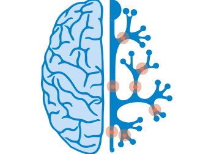
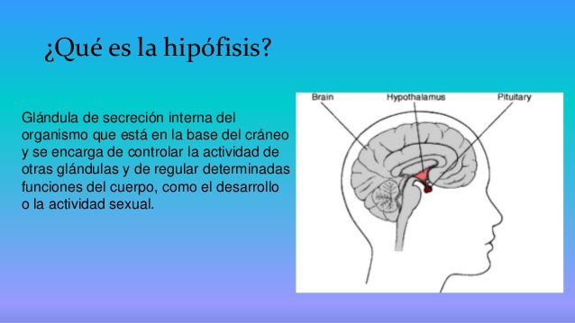

¿Que es el sueño?
El sueño es un proceso fisiológico importante y complejo que requiere el funcionamiento adecuado de múltiples regiones cerebrales. Estas estructuras deben trabajar juntas, eléctrica y químicamente, en una red para facilitar el sueño y están moduladas tanto por influencias internas como externas. Es decir, el sueño es inducido por nuestro cerebro tras la llegada de una determinada información del exterior (principalmente la falta de luz cuando se hace de noche) y de nuestro cuerpo (que acumula cansancio después de un día de actividad).

¿Porque nos afecta tanto?
En estos últimos años han aparecido un torrente de publicaciones que dan explicación a estas preguntas y que trascienden la visión clásica del sueño como un proceso pasivo de conservación energética (me quedo quieto para gastar lo mínimo) parecido al letargo o la hibernación (estudio).
Y entonces ¿cual es la funcion del sueño?
El sueño se inició, seguramente, como un comportamiento de adaptación a unas circunstancias concretas del entorno (es oscuro y soy mucho menos eficiente moviéndome). Pero, como la naturaleza odia perder oportunidades, después de millones de años de evolución, el cuerpo ha aprendido a usar esta oportunidad para distribuir la energía a sistemas muy importantes para nuestra supervivencia como el sistema nervioso o el sistema inmunitario y permitamos que sistemas muy exigidos durante el día, como el muscular, puedan bajar su actividad y recuperarse del esfuerzo del día.
Durante la noche habrá momentos donde el sistema inmunitario recibe un plus energético (¿te has fijado que por la noche sube la fiebre? pues esta es la razón), momentos donde es el cerebro quien tiene ese superávit e integra las experiencias del día, a la vez que nos encontramos con el único momento donde disminuimos completamente el tono muscular.

¿Como inducimos el sueño?
El sueño se induce principalmente por dos procesos: El proceso S u Homeostático: A medida que acumulamos actividad metabólica informamos al cerebro que se acerca el momento de descansar. El proceso C o Circadiano que le avisa que es de noche y es el momento óptimo para dormir.
¿Como dormirce rapido?
La clave está en que este mecanismo nos ayudará a desprendernos de cualquier pensamiento que no sea el de dormir. La parte más importante del ejercicio que te ayudará a conciliar el sueño en un minuto es la de contener la respiración durante siete segundos.Esto permitirá que el oxígeno circule tras llenar tus pulmones de aire después de respirar profundamente. El método utilizado se llama 4-7-8 y nos permitirá quedarnos dormidos en un minuto.